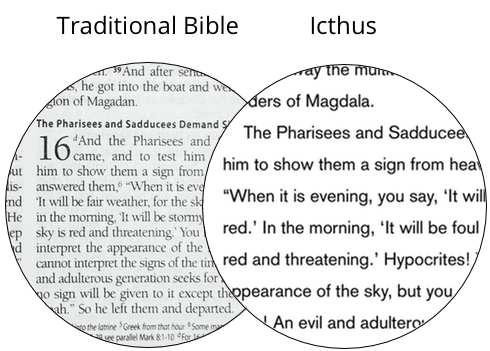

Icthus is a Bible app for iPhone and iPad. Its goal is to present the text of the Bible in a clean, modern interface.
Most of our Bibles are designed for reference. Icthus is designed for reading.
Icthus removes chapter headings and footnotes. Chapter and verse numbers are hidden until you need them. The font is large with plenty of space between lines. No red text, no narrow columns, nothing to interrupt your time with the Word.
Features
Readable
Icthus removes distractions so you can read the Bible like any other book.
Free
Icthus is completely free, because the words of the Bible should be available to everyone.
Navigation
No matter where you are in a book, you can get to any chapter in the Bible in just a few taps.
History
Reading multiple books at once? Icthus keeps track of where you've been so you can keep your place in as many books as you need.
iCloud
Icthus keeps your History the same on all your devices, so you can always pick up where you left off.
Translations
Icthus offers the World English Bible written in plain english, and the American Standard Version for more traditional wording. More translations are planned.
Ready to download Icthus? Go ahead, it's free.
Want to get in touch? Check out the contact page.